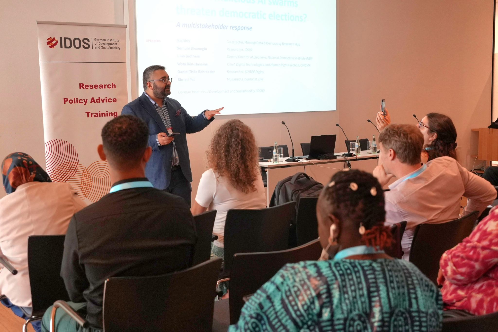
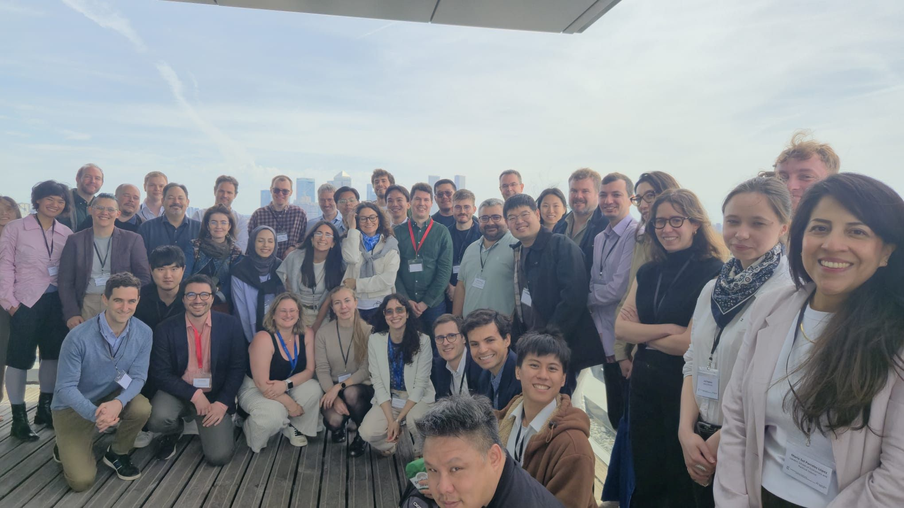
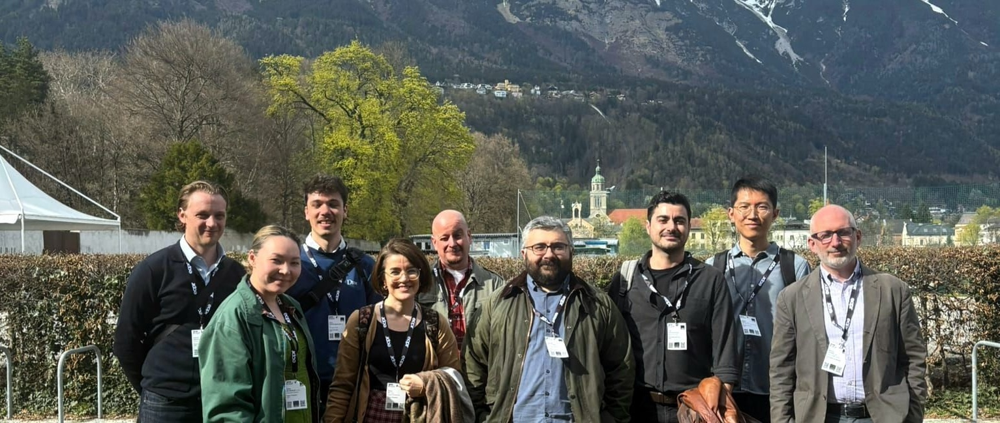
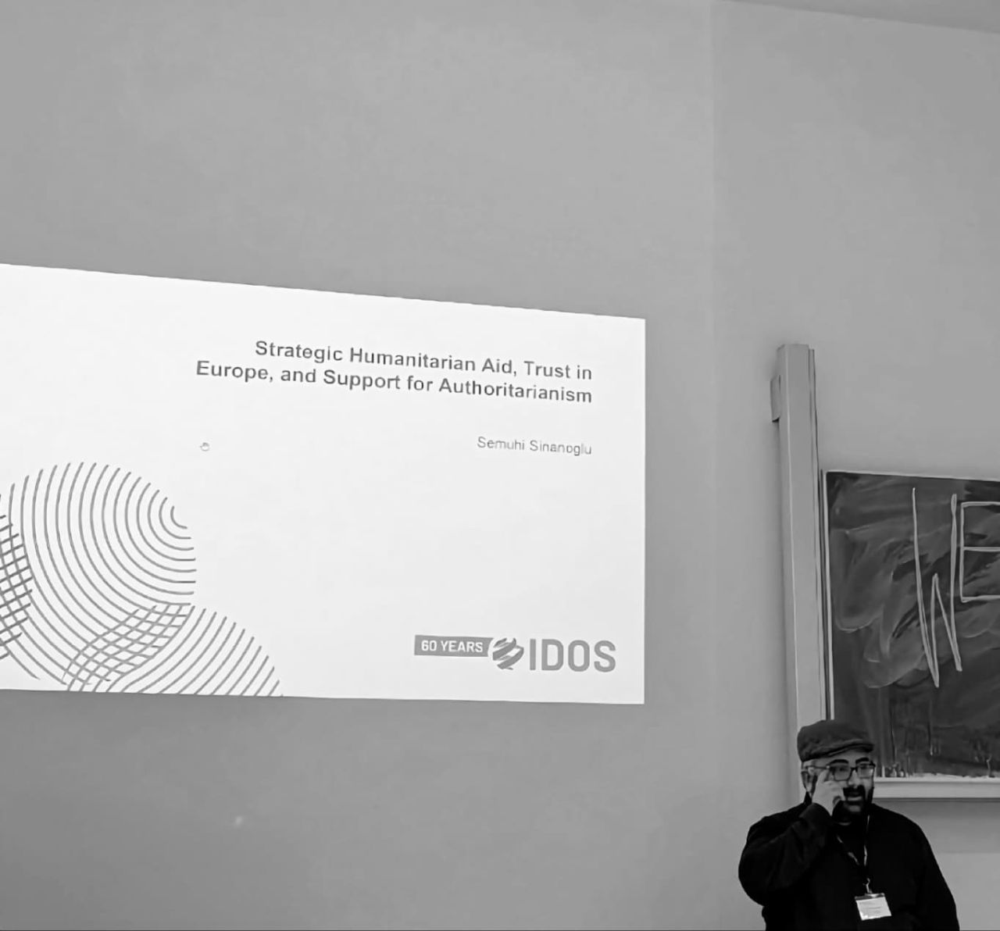

JUL 2026 · TALK
What types of narratives do autocratic regimes use in propaganda, and how effective are they? Which strategies can counter them? These questions run through this portfolio. I study how autocrats manufacture support with soft tools, ranging from state-funded fiction to GovTech, and what pro-democracy stakeholders can do about it. That is why this portfolio pairs every effectiveness study with a countermeasure, from information correction to cross-partisan depolarization.
Autocrats deploy narratives to discredit European and international organizations, as well as the domestic opposition, in order to consolidate their support base. Transparent communication of the strategic intent behind Western relief aid, and cross-partisan post-disaster relief offered by the opposition to government supporters, may help counter these narratives, yet both carry unintended negative consequences.
How does international assistance impact public attitudes towards donors in the recipient country when tied to strategic interests? European leaders highlight more and more the strategic and transactional nature of international assistance. Yet, we still do not know much about how such shifts in framing of international assistance are perceived by the recipient public, especially in contexts with prevalent anti-Western attitudes and propaganda that dismisses aid as hypocritical and disingenuous. I conducted an online survey experiment in Turkey to assess the attitudinal and quasi-behavioral effects of different types of international assistance post-disaster -- conditional, unconditional, and strategic -- and whether they help sway public attitudes in the face of authoritarian propaganda. Contrary to my expectations, strategic aid decreased trust in the government as a defender of national interest among conservative, nationalist, and Eurosceptic regime supporters, and also increased trust in European organizations. It did so partly by mitigating conspiracism and evoking positive emotions among pro-government voters whose views are hard to change. However, this comes at a cost: increased trade skepticism and less engagement with foreign media outlets among regime opponents. The findings have significant implications for international assistance strategies for increasing European soft power and their unintended consequences.
The way European donors talk about humanitarian aid matters as much as how they provide it. My experimental research in Turkey shows that transparent communication about the realpolitik behind humanitarian aid may help counter authoritarian propaganda in highly polarised middle-income countries with widespread anti-Western attitudes. My findings indicate that when donors openly acknowledge strategic motivations, propaganda messaging may lose its effectiveness among conservative, nationalist and Eurosceptic constituencies in recipient countries, whose attitudes are often hard to shift. Transparent communication may reduce conspiracism among this group, increase their trust in Europe and their support for international trade, while their support for the incumbent government may decline. Winning over these constituencies would be critical to democracy protection initiatives, as they often lend normative and systemic support to autocrats. However, donors must strike a careful balance and adopt a dual approach. While strategic messaging can persuade Eurosceptics, it may also alienate pro-EU, cosmopolitan citizens who value unconditional solidarity.
Strategic framing of humanitarian aid, communicated as such, increases trust in European organizations.
Can opposition parties help depolarize with cross-partisan post-disaster solidarity under authoritarian regimes? The increasingly frequent climate disasters like wildfires and floods may exacerbate polarization through a partisan distribution of resources, and autocrats may take advantage of these disasters to consolidate their support base and discredit the opposition. In response, opposition parties may deploy cross-partisan disaster relief aid as a depolarization strategy. We test the effectiveness of such relief aid by Turkey's main opposition, using a well-powered in-person survey experiment. Turkey, an electoral autocracy with intense polarization, government propaganda, and ethnic conflict, presents a hard test case. Our findings reveal that costly public acts may increase political tolerance toward the opposition, despite government propaganda. However, it backfires in terms of affective polarization, leading to perceptions of hypocrisy not just among pro-government voters but also among ethnic minorities in opposition. These results suggest that conventional depolarization tools may have unintended and divergent consequences, with significant implications for opposition strategies against autocrats.
Autocrats invest in gov-tech tools to claim responsiveness and redress citizen grievances, nurturing normative support for their regime. They also exert political control over digital spaces to steer narratives. Donors must acknowledge that digitalization does not always mean democratization, and that conventional tools for protecting information integrity, such as content moderation, may be politically costly.
How do e-government tools that enable direct online communication with the executive affect citizens’ support for autocracy? On the one hand, such centralised digital government tools may sway public opinion in favour of strongman rule at the expense of autocratic institutions; on the other hand, such participation and responsiveness may unintentionally unveil a wide range of issues in the country, undermining trust in the regime. We examine an electronic platform in Turkey, CIMER, that allows citizens to submit petitions and complaints, send messages to the president, and propose policies and programmes. We conducted a well-powered online survey experiment with a nationally representative sample (N≈4,600) that estimates the effects of different types of regime propaganda around this e-portal on attitudinal and quasi-behavioural outcomes. The results suggest that propaganda through CIMER improves diffuse support for the regime and generates behavioural compliance, even among opposition voters. However, these positive effects accrue to regime institutions rather than to Erdoğan personally as the executive’s personalistic leader. On certain dimensions, the propaganda backfires among the regime’s core support groups, eroding their perceptions of Erdoğan’s popularity as a leader. These results have major implications for the expected downstream effects of these types of digital tools on regime stability and legitimacy, and they add to the growing warnings about holding overly optimistic views concerning the effects of digitalisation on democracy.
International donors commit substantial resources to GovTech projects. World Bank GovTech investments alone have exceeded $118 billion over the last three decades. Donor strategy documents consistently frame digital transformation not only as a vehicle for improved effectiveness but also for strengthening democracy. Autocrats are equally invested in these tools. Globally, at least 88 authoritarian regimes currently operate GovTech projects, and electoral autocracies receive the largest share of GovTech aid (48.6 per cent of commitments). Beyond well-known surveillance applications, autocracies deploy GovTech for service delivery, grievance redress and even citizen engagement. These platforms are deployed to project an image of responsiveness and legitimacy. Our experimental evidence from Turkey shows how efficiency-enhancing GovTech tools, when paired with sophisticated regime communication, can durably entrench autocratic rule. Donors must take the second-order effects of GovTech initiatives seriously and develop mechanisms to carefully evaluate the risks of unintended consequences. Donors need to consider actively participating in public communication on these platforms, with visible donor branding, to counter government-controlled propaganda, claim credit for service delivery and strengthen trust in donor countries and organisations.
The increasing sophistication and accessibility of artificial intelligence (AI), including the generation of deep fakes, exacerbates the challenges of information pollution by making it harder to discern truth from falsehood, thus manipulating public perception. This policy brief presents international initiatives and critically discusses the tools available to combat information pollution. The focus of approaches to counter information pollution needs to be broadened. Instead of narrowly focusing on politically controversial content moderation, content-neutral intervention tools should receive more attention, and the potential of AI tools to scale up these interventions should be considered. Policy- makers and advisors need to be mindful of context sensitivity. There is no one-size- fits-all solution, and effective tools in some contexts may backfire in others.
Autocratic governments invest in controlling entertainment content, allocating significant resources to TV series and movies that manufacture public support and boost nationalism. This visual authoritarian communication is sophisticated and varied, and effective because it is tailored to the different ideological support groups of the regime coalition.
How does autocratic soft propaganda impact support for security operations at home and abroad? Autocratic regimes allocate significant resources for TV series and movies to manufacture public support and boost nationalism. Despite the growing scholarship, we still do not know enough about the effectiveness of soft propaganda. To that end, first, we scraped transcript data from 1,201 episodes across fourteen Turkish government- sponsored TV series over a decade (2014-2026) and 410 instrumental soundtracks data. The findings reveal a sophisticated, differentiated propaganda ecosystem where each series serves a distinct ideological function, evokes varying emotions, and closely correlates with contemporary events. Second, we conducted an in-person experiment in Turkey to measure the effects of government-funded militarist and imperial/neo- Ottomanist/sultanist TV series on support for cross-border military operations and domestic police operations. The findings suggest that we should take fiction seriously: imperial/neo-Ottomanist/sultanist TV series significantly increase support for scaling up security operations abroad among religious pro-regime voters, while militarist scripts drive similar attitudes among nationalists. Both scripts fuel anti-Israel sentiments among government supporters. The results show that autocrats cater soft propaganda to different ideological groups within their support base and to varying degrees of effectiveness.
How TRT series serve as a propaganda tool for authoritarian narratives.
A pre-registered in-person survey experiment in Turkey (N = 1,769, with Donnelly) showed respondents sultanist or militarist scripts, against a neutral drama control, then measured support for military bases, drone strikes, and intelligence operations abroad. Pick a script; bars are standardized effects against the control, and faded bars miss significance at 5%. The results show that different scripts are effective for different ideological groups within the government's voter base.

#FIMI operations' effectiveness has so far been an open empirical question, with evidence suggesting their impact might be more limited than initially assumed. That's about to change with malicious #AI swarms. These are AI agents with persistent identities and memory that would come across as a real, diverse crowd of people, and could self-coordinate and infiltrate online communities. The risk is real and imminent. To discuss the effects of AI swarms on electoral integrity, we convened a panel for the DW Global Media Forum #GMF2026, which took place this year at the World Conference Center Bonn.
Read on LinkedIn →
State-sponsored fiction is politically consequential. We should take it seriously. Last week, I was at Queen Mary University of London for the APSG conference, where I presented joint work with Michael Donnelly on how authoritarian state-sponsored fiction shapes public support for security operations abroad. Authoritarian governments invest more and more in producing and controlling entertainment content. It is a deliberate instrument of influence.
Read on LinkedIn →#Donors pour money into #GovTech expecting a #democratization dividend. #Autocrats are spending just as eagerly on the same tools. At least 88 authoritarian regimes currently run GovTech projects. Electoral autocracies alone receive 48.6% of GovTech aid commitments. Someone must be off the mark. In our recent policy brief, our experimental evidence with Armin von Schiller suggests that efficiency-enhancing GovTech does not just make services faster. When it is paired with sophisticated regime communication, it can durably entrench autocratic rule.
Read on LinkedIn →
International #donors allocate millions of dollars every year to gov-tech projects, expecting a #democratization payoff. Autocrats, meanwhile, are using these same tools to consolidate control. Someone must be off the mark, right? Last week, I was in #Innsbruck for the European Consortium for Political Research Joint Sessions. I presented our ongoing work with Armin von Schiller on how autocratic regimes deploy #propaganda and build legitimacy through #egov tools.
Read on LinkedIn →
Last week, I was back at the University of Muenster to present my work on the strategic framing of humanitarian aid, how it can increase trust in #Europe and undermine support for #authoritarian regimes. This was my second time at the #PEDD Conference, and one thing that I really appreciate is the consistency of this gathering.
Read on LinkedIn →